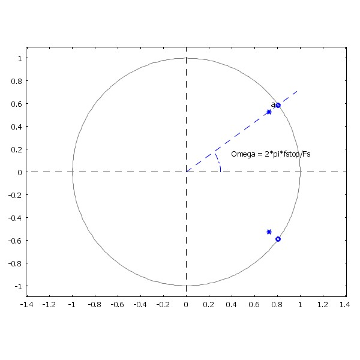
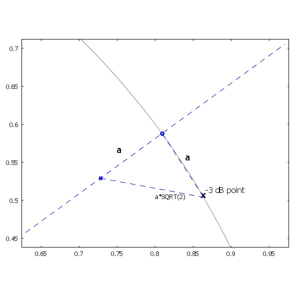
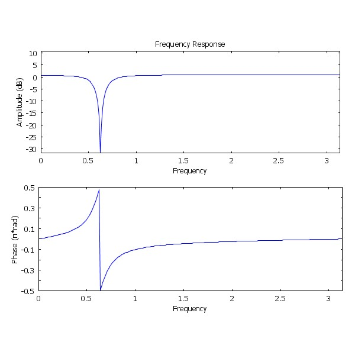

Digital Signal Processing
Notch bandstop filter
Description:
A notch bandstop filter is a very simple IIR-filter, which can be used
to cut out a single frequency tone from a signal. It is based on a
zero-pole pair on same angular frequency.
The zero on unit circle assures that the amplitude response at
that frequency is zero. The pole on the same angle, but inside the unit
circle, will flatten the gain of the system. The flattening is obvious,
since for most of the points on the unit circle, the distance to zeroes
and poles are the same, leading into amplitude response of 1.
The bandwidth of the filter is controlled by the distance of the pole
from the unit circle. It also defines the -3 dB half-bandwidth of the
filter, as you can see from the following figures. 
These pictures can be regenerated with COMSOL
Script 1.0 program by running this script
file.
Author: Antti Piironen, EVTEK